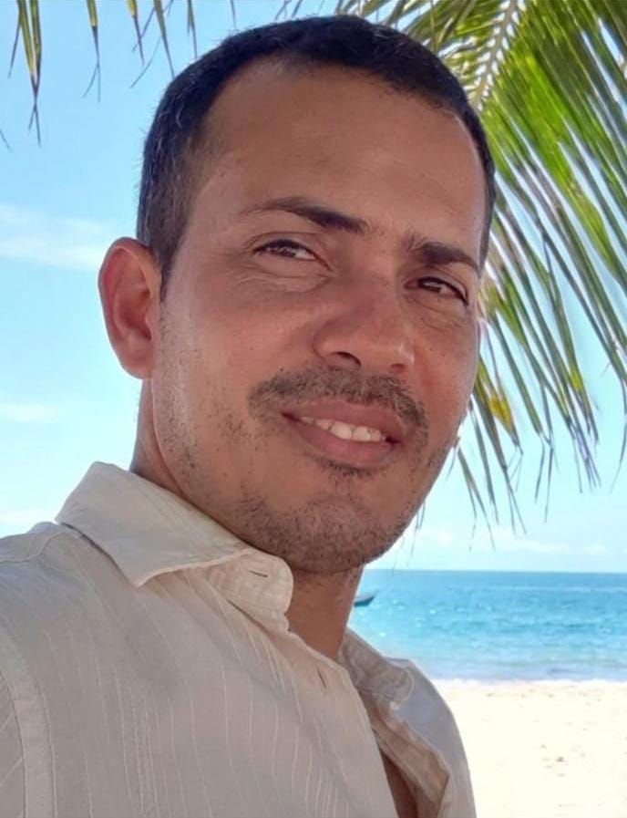

Leonardo Queiroz | WDD 130

Olá! Meu nome é Leonardo Gomes e sou de Salvador, Bahia. Eu gosto de de futebol amo um rock and roll e sou membro de A Igreja de Jesus Cristo dos Santos dos Ultimos dias.

Olá! Meu nome é Leonardo Gomes e sou de Salvador, Bahia. Eu gosto de de futebol amo um rock and roll e sou membro de A Igreja de Jesus Cristo dos Santos dos Ultimos dias.